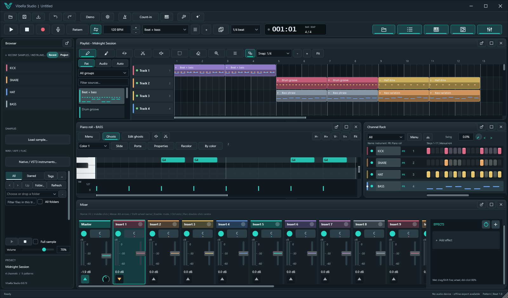
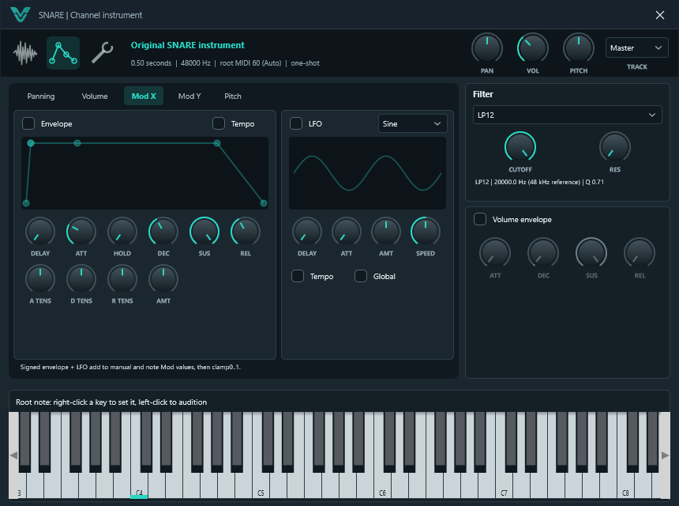

▦
Compose
Step sequencer and Piano Roll with slides, portamento, chords, arpeggios, strumming, humanize and scale snapping.
Free · Open source · Windows
VibeRa Studio is a complete music production studio with the pattern-first workflow producers already love: Channel Rack, Piano Roll, Playlist and Mixer, built from scratch and given to everyone for free.
Early preview · AGPL-3.0
Making music should not depend on what you can afford. VibeRa was built by one music lover who put hundreds of hours and thousands of dollars of his own time and money into a real studio, and gave it away for free, so anyone, anywhere, can make the music in their head.
It is a passion for music production, shared with you. Use it, enjoy it, and if you can, help make it better.
One studio, from the first beat to the final export.
Step sequencer and Piano Roll with slides, portamento, chords, arpeggios, strumming, humanize and scale snapping.
Playlist with coloured tracks, instrument and audio tracks, track lock and height, markers, multiple arrangements, tempo curves and time-signature changes.
An original instrument with more than 75 presets, wavetable oscillators and 16-voice unison, from synthesized basses to recorded pianos, strings, brass and guitars.
A three-page channel window with envelopes, LFOs, filter, time stretching, loops and precomputed effects, plus Drum Pads and automatic slicing to Channels.
Audio recording with loop takes, comping, punch-in and several inputs at once. MIDI overdub or replace, step recording and automation recording.
Full Mixer with routing, sends, sidechains, automation, latency compensation and 36 built-in effects, from a studio reverb and multiband to a maximizer, spectrum analyzer, Lo-fi and the tempo-synced Beat Gate and Pump. Every effect shows a live visual of what it controls.
Instruments and effects run in a protected process, so a crashing plugin cannot take your session down.
Launch Patterns from pads or a MIDI controller, with launch quantum and scenes.
WAV, FLAC, OGG and MP3 at 44.1 or 48 kHz, 16, 24 or 32-bit, or one file per Mixer insert, with effect latency lined up from the first sample.
Autosave every two minutes, five rotating backups of every save, and recovery after a crash.
Open .flp project files and MIDI files, and drag samples straight from the Browser.
Dark, focused and fast. Choose your colours and font, or switch to high contrast.


Every sample Channel opens a compact window with three pages: the sample itself, its envelopes and LFOs, and everything else. Knobs, not endless sliders.
VibeRa speaks quarter tones. Write in Rast, Bayati, Saba, Sikah, Hijaz and more with a Piano Roll guide that marks every half-flat degree, snap notes to a maqam, tune each Channel with maqam presets, or load any Scala scale, such as 24-EDO, mapped across your keyboard.
.scl) scales of any sizeWindows 10 and 11, 64-bit. No account, no license key, no cost.
Loading releases…
Prefer to build it yourself? See the build guide.
VibeRa grows every week. Here is what landed recently.
The goal: a complete, professional studio that belongs to everyone.
A studio made by a community of musicians and developers goes further than one person ever could.